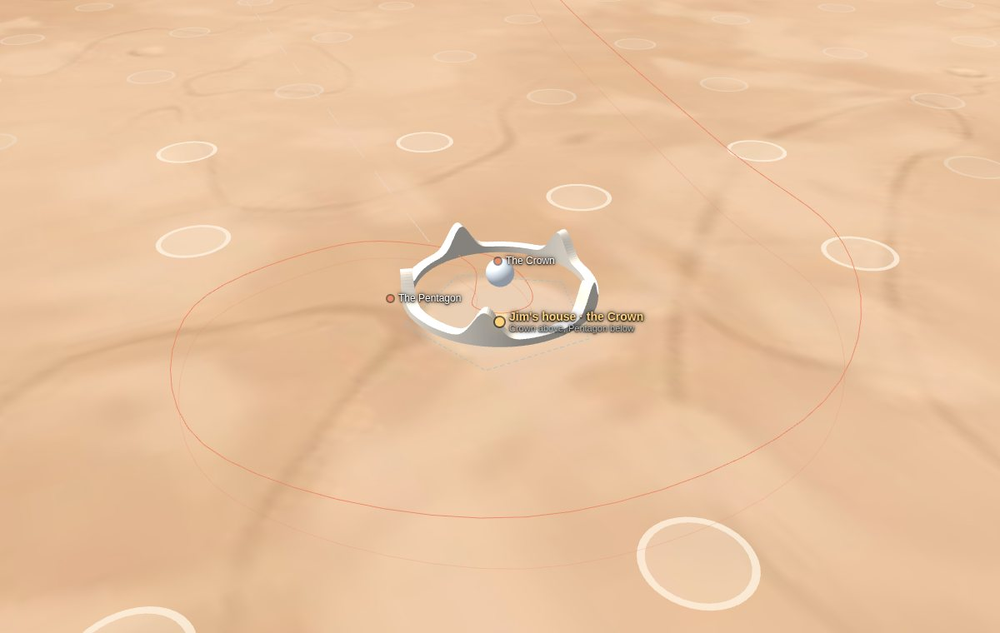

The Crown and the Pentagon
Jim's retirement house on Mars, in Arcadia Planitia: a white crown floating over a stone garden, a five-level world below the ground, a spaceport 30 km to the east and a city that will grow around it. This book collects every plan in one place: what each part looks like and how it works.

The ideaA day house in the sky, a night house in the ground
Above ground, the Crown is for light and views. Its white ring of fired Mars soil floats 40 m up, with five spires, window slots that keep out the harsh sun, a mirror Orb at the centre whose hollow heart is the Universe Hall, and a pod hangar in the east spire. It is where Jim watches the blue sunsets, plays the piano in the salon and greets guests arriving from Earth.
Below ground, the Pentagon is for safety and abundance. Sixteen metres of soil stop the radiation, hold the air pressure in and keep the temperature steady. Its five levels hold Jim's residence, a garden level with orchards, a lake and a forest, his studio and workshops, the plant that makes air and water, and the halls where cargo, rovers and later a maglev train arrive.
Around it grows Arcadia City. Each new home takes the next seed of a sunflower spiral. The spaceport, 30 km east, is where ships from Earth land, refuel with fuel made on Mars and fly home.

Real, or future?
Real science and engineering
Almost everything in the book uses what is known today: the site and its ice, the air and radiation on Mars, making fuel from ice and air, fission reactors, solar fields, shielding with soil, rocket-powered flight in thin air, farming under lights, the 26-month launch windows. The numbers are worked out and shown.
Future technology
A few things are dreams, on purpose, because Jim asked for them: the anti-gravity drives that hold the Crown up, the portals that replace lifts, the Wormhole Gate, the universe image that floats in the Orb's hall and the radiation glass of its rest rooms. They are marked like this box wherever they appear, with a real fallback where safety needs one.
ContentsThe chapters
Each chapter pairs what it looks like with how it works, with drawings, numbers and the choices still open.
For JimDecisions
Rev B of the floor plans is approved, and Jim answered every question this book raised on 1 October. Nothing is waiting for an answer. One answer became a new design for the Orb, shown here for review. Every requirement and decision is listed in the requirements and the decision log.
For review
- The Orb, Rev D: the Universe Hall.Drawn from Jim's answer. The universe isn't shown in a closed ball. The Orb is hollow and the 3D universe fills its centre, a hall 24 m across, watched from rooms on three rings round it, each with a glass front. A switch turns it on and off, and it zooms from the whole universe down to Mars and the house. Earth and Mars sit in the corner with their weather, live, and can be hidden. The top ring has five rest rooms with radiation-glass windows. If it looks right, nothing is needed; otherwise say what to change.Chapter 02 · The Crown, the Orb · 1 Oct 2026
Decided on 1 October 2026
- The site is the real landing zone AP-1.Jim: "do your best judgment." Chosen: the spaceport on AP-1 (39.8° N, 202.1° E), the safest of the Arcadia sites studied for SpaceX Starship, with ice just under the ground; the house 30 km due west at 39.8° N, 201.4° E. Rev B's "about 44° N" is replaced.Chapter 01 · Site and city
- Air inside: 70 kPa with 27% oxygen.Jim: "do your best judgment." Chosen: air that breathes like Calgary. It halves the load on the walls and the gas needed, and suit trips need no long wait.Chapter 08 · Life support
- Sleep below ground most nights; rest in the Orb by day.Jim: yes, and "I should have some rooms to rest in the Orb", behind windows that block radiation. Sleeping in the master suite down and spending about six hours a day in the Crown keeps him near 20 mSv a year; the Orb's rest rooms count like the Crown.Chapter 08 · Life support · chapter 02, the Orb
- The Gate opens on the TTMath campus in the demo.Decided with our best judgment, as for the site and the air: zoom out to the whole universe, back in to the TTMath campus in Gale crater, and step through into demo 1. Any other place can be added later.Chapter 02 · The Crown, the Orb
- Moving in: 2027.Year 0 of the timeline. He launches in the window of November–December 2026 and lands at Arcadia Spaceport in mid-2027. In the story, the robots that build the house landed two windows earlier.Chapter 10 · Building it
RevisionsHow the design got here
| Rev | Date | What changed |
|---|---|---|
| A | 30 Sep 2026 | First floor plans of the Crown and the Pentagon, the site and the flight. |
| B | 30 Sep 2026 | From Jim's answers: the Crown floats on anti-gravity, sharper spires, the Orb and the Wormhole Gate, portals instead of lifts, master suites up and down, a dust storm in the flight. Approved. |
| C | 30 Sep 2026 | This design book: the Mars Atlas, the real site coordinates, and the systems designed in detail: structure, interiors, power, transport, the spaceport and fuel plant, life support, communications and the building sequence. |
| D | 1 Oct 2026 | From Jim's answers: the Orb becomes the Universe Hall, with lounges, rest rooms behind radiation glass, the corner dashboard of Earth and Mars, and the Gate on a bridge. Decided: the site on AP-1, air at 70 kPa, sleeping below ground, moving in in 2027. The Orb is shown for Jim's review. |